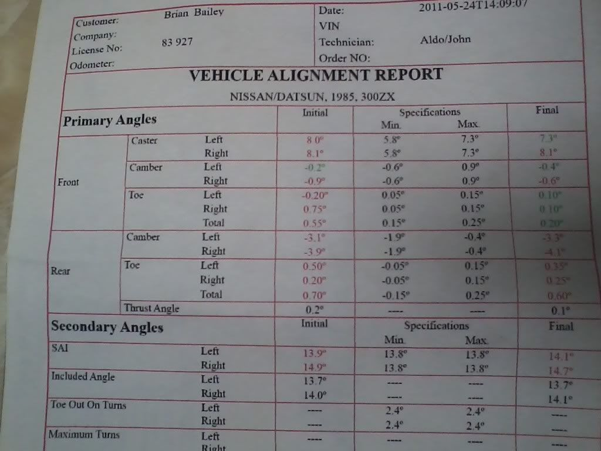
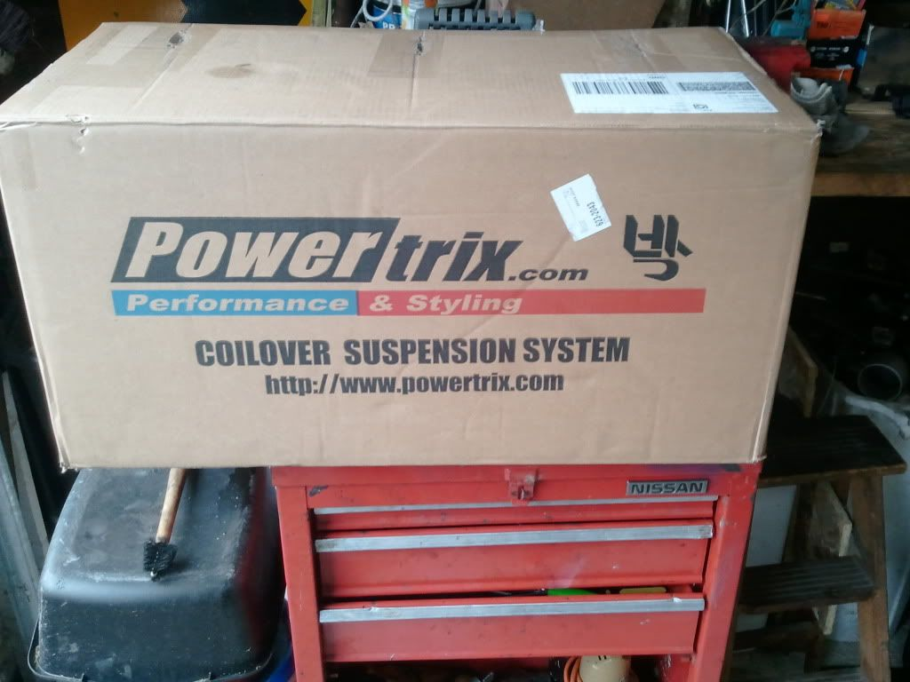

-
My rears weren't TOO bad when on a stock tire set-up and slammed. But yes, it would be practical to do s13 rear conversion or cut and weld the tabs on the OEM z31 subframe to dial in toe.Usual Z31 suspect: Garage Queen (aka broken)

-
Yeah, best for stock subframe would be rod ends and adjustable length on the outer arms to re-center the wheel in the arch when dialing in toe.

1988 300zxt. gt35, stance, etc. Wheels: Varrstoen ES2 18x9.5 et-13 225/40. 18x10.5 et0 245/40
1990 jetta vr6'd -
I have -4.8deg of camber, non-adjustable…Toe is set max out and its .2" total toe in…but doesnt wear tires horribly.- VG30DET (HE341) 86 300ZX - 1982 280ZX Turbo - Headered NA 1986 300ZX 2+2 - 2000 Xterra - -

My next project will be fixing toe before I hit the racetrack and smash through $800 tires in 2 sessions.Usual Z31 suspect: Garage Queen (aka broken)
-
You should pick up a spare rear x-member and do similar to what I did, but make the new mounting points slightly farther out (0.30") on the outer most tabs. This will correct the toe and bring back some camber. You also need to add about -2 degrees more front camber. Will help performance wise and fender clearance.DeleriousZ;348205 wrote: Yeah, best for stock subframe would be rod ends and adjustable length on the outer arms to re-center the wheel in the arch when dialing in toe.
Indeed. I have had rod ends for a while now and a spare subframe. After an initial go at it, its really not worth it. I still think one is better off just adjusting the x-member within the limits. There are a lot of good stuff in the FC and E30 world. Datsun stuff too, very similar to Jame's setup.
We have the same Toe in specifications. While it doesnt eat tires terribly it is pretty far in from anything desirable.michaelp;348211 wrote: I have -4.8deg of camber, non-adjustable…Toe is set max out and its .2" total toe in…but doesnt wear tires horribly.
300zxturboftw;348222 wrote:
My next project will be fixing toe before I hit the racetrack and smash through $800 tires in 2 sessions.86na - BlueZ
Shiro #366 - Kouki Monster
85t - Mr Tickles -
Yup more neg camber with this new set upUsual Z31 suspect: Garage Queen (aka broken)
-

1988 300ZX Turbo, Shiro Special #760
1988 300ZX Turbo Automatic (wife's car)
1991 Hard-body 2WD
http://zccw.org/zccw/?page_id=1215 -
Sealed Roller Bearing Upgrade
Compression of the springs creates a twisting motion however it is usually not enough to break the bottom green locking collar loose.frostvectron;347960 wrote: I keep finding the lower collar (the one that sets the height) on both fronts keep getting loose over time even when I am tightening it like a bear. Anyone else??
88Turbozx;347980 wrote: I had that problem and one side in the front lowered itself 1in and drooped the spring 1/4in. I've been using a tiny amount of locktite and have been good for like 6k miles.
However with the McPherson style front suspension of the Z31 plus the torsion created by aggressive driving and steering could contribute to this.
We can offer an upgrade part that will definitely eliminate the possibility of the locking collar coming loose if tighten properly.
The Part: Sealed Roller Bearing Top Spring Seat:
More importantly this part will upgrade the suspension actuation and eliminate tension and resistance in the system caused by spring twist during compression making suspension actuation more consistent and fluid. Further, it will allow the complete coilover assembly (shock body, spring, lower mount) to rotate freely and without friction during regular steering maneuvers.
We'll work on special pricing for anyone interested.
Sincerely,
Charles Park
POWERTRIX
Performance & Styling
www.powertrix.com
Office 858-566-5060
Mobile 619-944-6055

-
I'm interested.- VG30DET (HE341) 86 300ZX - 1982 280ZX Turbo - Headered NA 1986 300ZX 2+2 - 2000 Xterra - -
If this is an engineering problem with the one's I already bought, why should I have to pay extra to fix them?
How much extra?
1988 300ZX Turbo, Shiro Special #760
1988 300ZX Turbo Automatic (wife's car)
1991 Hard-body 2WD
http://zccw.org/zccw/?page_id=1215 -
No, it is not an engineering problem. IT IS AN UPGRADE
No, it is not an engineering problem. It is absolutely not necessary nor required as we have offered like applications since 2002.reddzx;348919 wrote: If this is an engineering problem with the one's I already bought, why should I have to pay extra to fix them?
How much extra?
IT IS AN UPGRADE to the working of the suspension.
Most if not all other coilover production companies do not offer this at all for their like McPherson strut style applications.
And if they do, it is also an option not part of the regular assembly.
We are just offering an upgrade if you choose to improve the suspension actuation prowess.
It is an option to upgrade as we offer upgraded Swift Springs.
We are just pointing our that this may help for those that are more aggressive with the duty of their cars.
One thing that may help those that are breaking the collars loose would be to take some preload out of the springs.
The more preload, the more tension is created that can contribute to that issue.
A quality sealed roller bearing is not cheap. Regular Retail pricing for the set which include 2 sealed bearings and 2 metal thrust washers is $129.95
We are working on a 30% discount for members of the forum board who would be interceded in this upgrade.Sincerely,
Charles Park
POWERTRIX
Performance & Styling
www.powertrix.com
Office 858-566-5060
Mobile 619-944-6055
-
Ah, OK Thanks. I'm not an aggressive driver so it may not be an issue for me.
1988 300ZX Turbo, Shiro Special #760
1988 300ZX Turbo Automatic (wife's car)
1991 Hard-body 2WD
http://zccw.org/zccw/?page_id=1215 -
I'm interested in them. I used some lock-tite on my lower sleeve lock to try to prevent this, which may be a bitch when/if I have to take it apart at some time…but it seems to have worked.
I need replacement lower bushings in the rear coilovers and a right front damper extension cable as it fell out of my ziptie (lol) and tore off during drifting.- VG30DET (HE341) 86 300ZX - 1982 280ZX Turbo - Headered NA 1986 300ZX 2+2 - 2000 Xterra - -
Just so everyone knows, you can get needle thrust bearings in 52mm I.D from mcmaster carr or other supplier with hardened top and bottom races for less than $50 all around, all you need is a finger of grease for each, and possibly wrap vinyl tape around the hat like a boot
This sealed version sounds like a good idea, and looks well made, if the cost ends up being reasonable, it's definitely worth getting for anyone who refuses to inspect/maintain their coilovers regularly -
Too funny, you scoffed when I drilled and tapped my spindle for a cable bracket to prevent this…michaelp wrote: I need replacement lower bushings in the rear coilovers and a right front damper extension cable as it fell out of my ziptie (lol) and tore off during drifting.
Cost me $40

Copyright © 2006–. All rights reserved. Privacy Policy